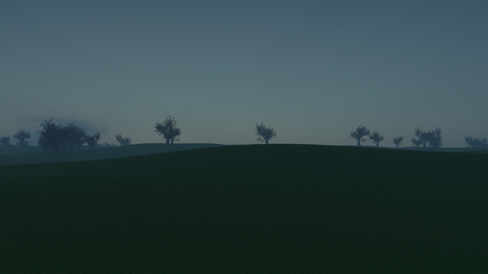

Fast with a rented GPU. Free without one.
3D scenes render on your own machine for free, or in minutes on a rented graphics card. You see the price first. The machine is deleted as soon as the frames are home.
This machine3 h 10 minFree
Rented RTX 409012 minAbout $0.60, cap $1.50


Rent for $0.60Or keep it free and wait